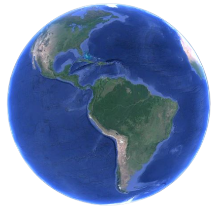

Egresado de la Universidad Tecnológica Nacional con el Grado de Ingeniera Electricista
Profesor en la UTN Facultad Regional Rosario de las cátedras de Instalaciones Eléctricas, Electrotecnia II y Física II
Me desempeñé como Fiscal de Obra para el Dpto de Mantenimiento en Pasa Petroquímica
De 2007 a 2016 me desempeñé como proyectista eléctrico en industrias SECCO
Actualmente me desempeño como Jefe de Ingeniería en esta compañía
Experiencia laboral: En la actualidad dicto clases en la UTN FRRo en las cátedras de Instalaciones Eléctricas, Electrotecnia II y Física II. Me desempeño como asesor externo para pequeñas empresas en el área de ensayos eléctricos y sistemas de potencia y soy Jefe del área Eléctrica del Dpto de Ingeniería de Industrias SECCO
Pasa Petroquímica - Año 2005 a 2007 - Fiscal de Obras
Industrias SECCO - Año 2007 a 2016 - Proyectista Eléctrico
Industrias SECCO - Año 2007 a la actualidad - Jefe Dpto Ingeniería
EyC Ingeniería - Año 2005 a 2013 - Asesoramiento en proyectos de energía eléctrica
MDD Ingeniería - Año 2011 a la actualidad - Asesor externo
Instaltec - Año 2017 a la actualidad - Planes de ensayos Eléctricos y proyectos en MT
A. G. Martinez, "Obtaining the limits of operation of underexcited generators," in IEEE Latin America Transactions, vol. 13, no. 9, pp. 2971-2974, Sept. 2015, doi: 10.1109/TLA.2015.7350047.
A. G. Martinez, Protecciones - Generación Distribuida en Líneas Largas y los Problemas en las Detecciones de Fallas - Revista CIER 65 (Protecciones), 11-17
Título de Grado: Ingeniero Electricista (Universidad Tecnológica Nacional - Facultad Regional Rosario) - Año 2004
Formación secundaria: Electrotécnico c/o Electrónica Industrial - EET 365 Gral Manuel Belgrano - Rosario - Año 1995
Cursos de Posgrado: "Trabsitorios Electromagnéticos" - Universidad Nacional de La Plata - Año 2015
e-mail: amartinez@iagm.com.ar
Celular: 0341-155105916
Dirección: Crespo 1428 / Rosario / Santa Fe